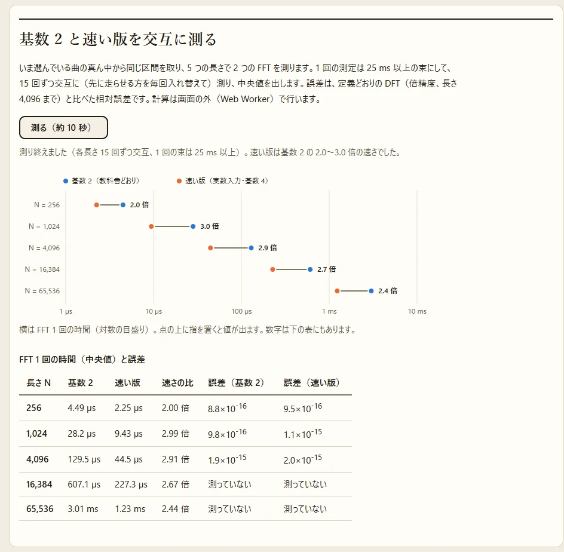
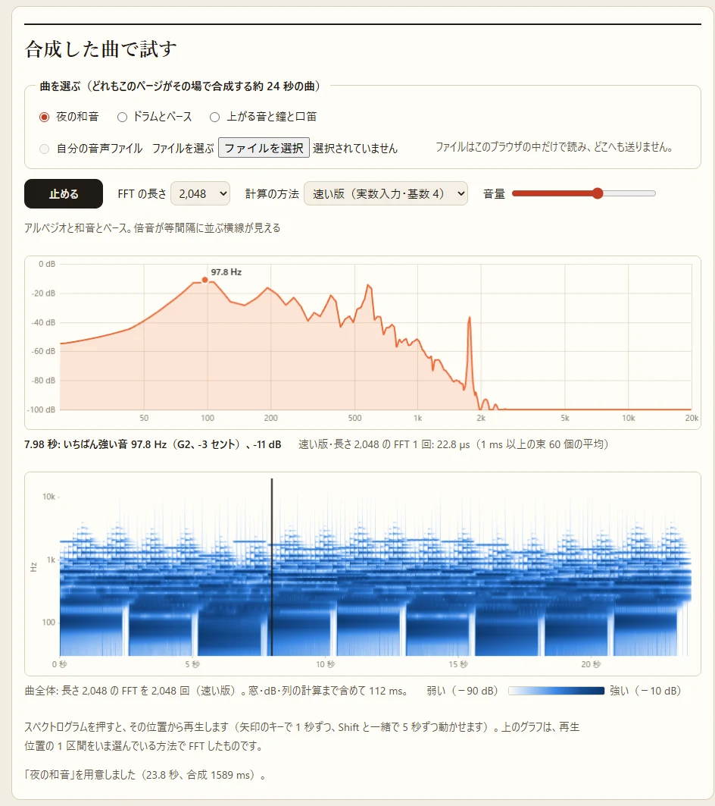
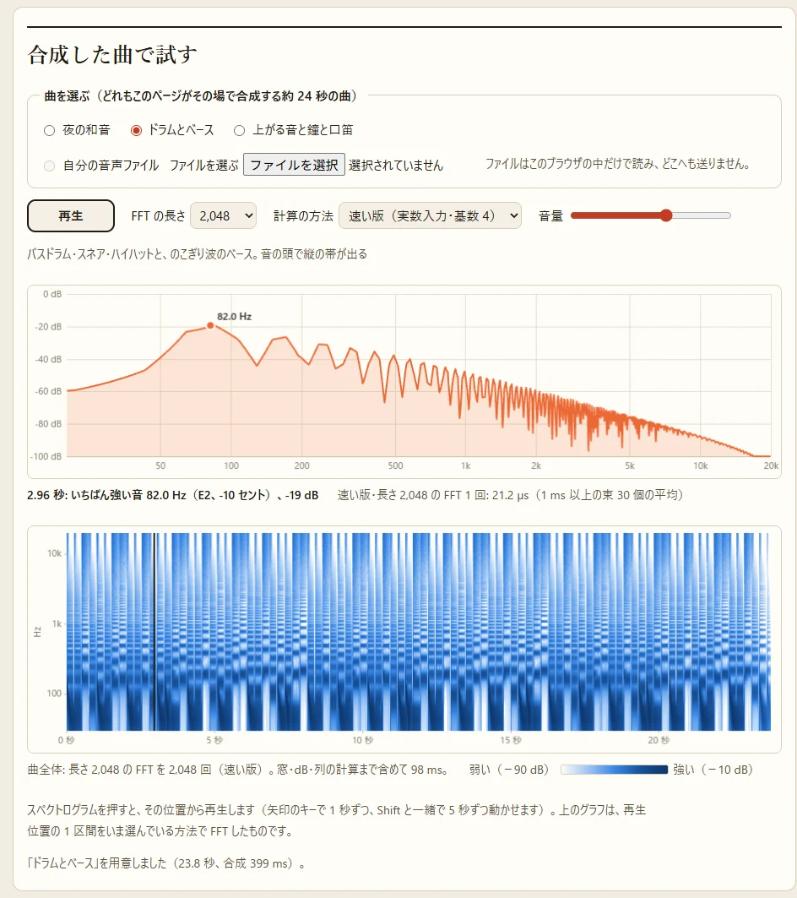
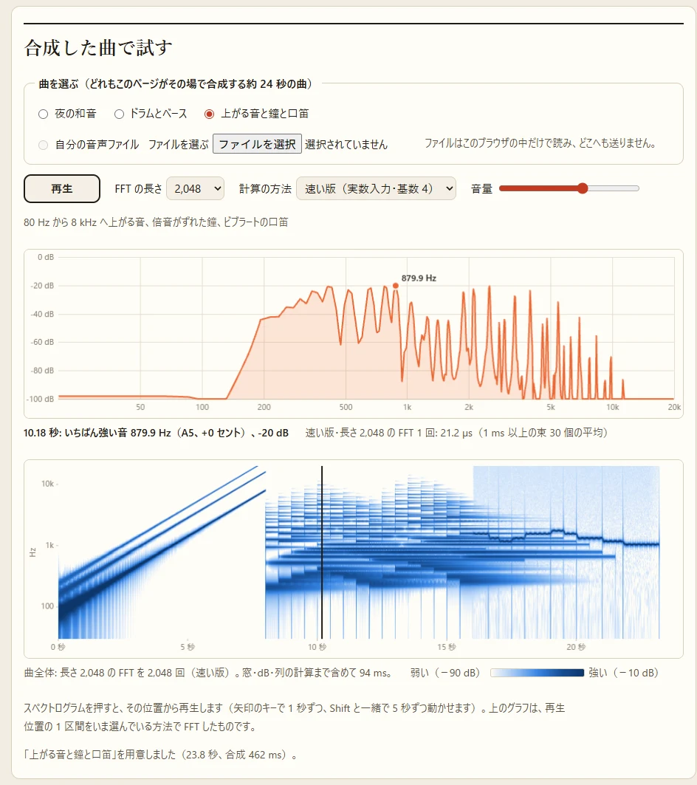
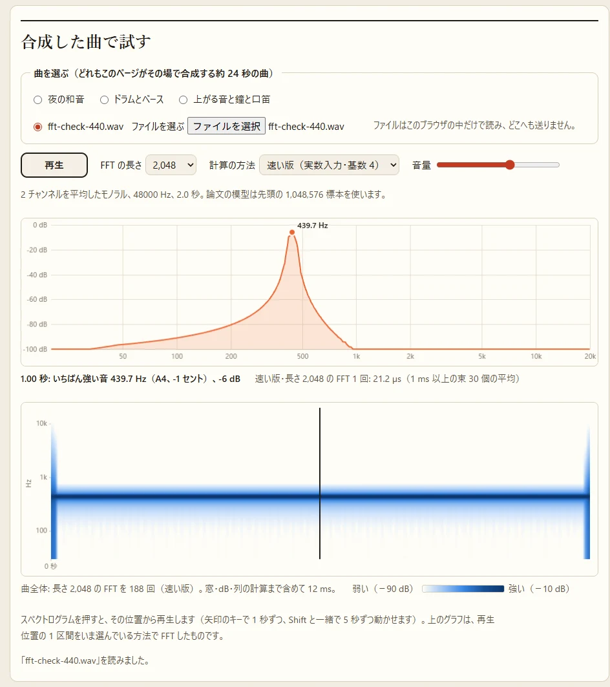
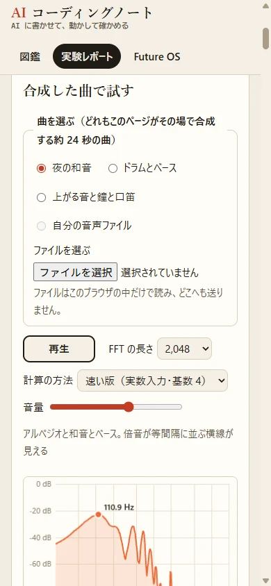

試せる実験 ・ 2026 年 11 月 26 日（音が出ます）
フーリエ変換の「指数 1/2」の論文で、FFT は速くなるかを試した
2026 年 11 月 24 日に OpenAI が公開した論文は、長さ N のフーリエ変換を、2 つの値に係数をかけて足す計算（au + bv）およそ N·(log N)1/2 回で行えることと、それより少なくはできないことを示しました。ふつうの FFT は N·log N 回です。この結果で FFT が実際に速くなるかを、論文の作り方から調べ、仕組みの一部を小さく作って測りました。
音楽を解析する長さでは、論文の作り方では速くなりません。そこで、実数の入力を使う基数 4 の FFT を作り、教科書どおりの基数 2 と同じ入力で交互に測りました。下の合成した曲か、自分の音声ファイルで試せます。
合成した曲で試す
スペクトログラムを押すと、その位置から再生します（矢印のキーで 1 秒ずつ、Shift と一緒で 5 秒ずつ動かせます）。上のグラフは、再生位置の 1 区間をいま選んでいる方法で FFT したものです。
基数 2 と速い版を交互に測る
いま選んでいる曲の真ん中から同じ区間を取り、5 つの長さで 2 つの FFT を測ります。1 回の測定は 25 ms 以上の束にして、15 回ずつ交互に（先に走らせる方を毎回入れ替えて）測り、中央値を出します。誤差は、定義どおりの DFT（倍精度、長さ 4,096 まで）と比べた相対誤差です。計算は画面の外（Web Worker）で行います。
| 長さ N | 基数 2 | 速い版 | 速さの比 | 誤差（基数 2） | 誤差（速い版） |
|---|
論文の仕組みを小さく動かす（予測と修理）
論文の上限の作り方の中心にある「予測と修理」を、長さ 1,024 のウォルシュ・アダマール変換で動かします。曲の先頭を 1,024 標本ずつ 1,024 区間に分け、1,024 行の束として計算し、ふつうの変換と答えと時間を比べます。窓の幅 D を変えると、予測の多項式の次数と、外れる行の数が変わります。作りは模型の作りと、論文との違いに書きました。
右の 3 枚は、横が時間（区間）、縦が符号の変わる回数（セクエンシー。周波数に近い量）、色が強さです。どれも同じ色の目盛り（ふつうの変換の最大から −80 dB まで）で描いています。
何が新しく分かったのか
対象は、長さ N のフーリエ変換です。音の解析に使うふつうの DFT と、±1 だけで作るウォルシュ・アダマール変換の両方を含みます。論文はこれらを「有限アーベル群のフーリエ変換」としてまとめて扱います。
論文が数えるのは、2 つの値 u・v から au + bv を作る計算（2 入力の線形ゲート）の回数です。係数 a・b は何でもよく、途中の値は何度でも使えます。結果は次の 4 つです。
- 少なくとも c·N·√(log N) 回が要る（c は正の定数）。
- どんな ε > 0 についても、Cε·N·(1 + log N)1/2+ε 回で計算できる。
- 独立な入力を J 本まとめても、1 本あたりの回数は同じ（上の数も下の数も J 倍）。
- 多項式の掛け算にも、同じ指数 1/2 が成り立つ。
1965 年の Cooley と Tukey の FFT は N·log N 回です。log N の指数が 1 から 1/2（と ε）へ下がったことと、1/2 より下げられないことを示した点が新しい所です。ε を 0 にした版（ちょうど N·√(log N) 回）を作れるかは、論文でも未解決とされています。定数 Cε の大きさは示されていません。主な部分は Lean（証明を計算機で確かめる道具）で形式化されていますが、第三者による確認はこれからです。
論文の作り方と、速さの関係
上の数の作り方（論文の第 II 部）は、次の順に進みます。
- ウォルシュ・アダマール変換から始めます。大きな変換を、入れ替えのきく m 個の演算 Qj の積として表します。
- 共通の基底（周波数の側）では、どの Qj も ±1 をかけるだけになります。積の符号は、−1 になる Qj の個数の偶奇で決まります。
- 独立な入力をたくさん束ね、行ごとに違う「ずらし」を割り当てます。どの周波数でも、−1 の個数（数 c）は行の間で 2 項分布になり、ほとんどの行で平均の近く（幅は √(m log m) 程度）に入ります。
- その幅（窓）の上で正しい符号を返す多項式を使えば、次数は √(m log m) 程度で済みます。これが「予測」です。
- 窓の外になる行は周波数ごとに違いますが、どの行かは前もって分かります。検査用の少数の行だけを周波数の側へ移し、Reed–Solomon 符号の検査と同じ形で外れた分を求めて直します。これが「修理」です。
- 多項式の 1 段には、m 個の Qj が全部入ります。論文の第 6 節は、この呼び出しを行の間で共有して 1 段の費用を下げます。これを再帰でくり返すと、指数が 1/2 + ε になります。
- ふつうの DFT（巡回群）へは、体の拡大と多項式の掛け算を使って広げます（第 III 部）。
ここから、速さについて次のことが分かります。
- 論文が数えるのはゲートの数で、計算時間ではありません。メモリの読み書き、キャッシュ、SIMD は数えません。論文は実際の計算時間について主張していません。記事も、実際の処理時間の短縮を直接示すものではないと書いています。
- 作り方が得をするのは、m がとても大きいときだけです。下の表は、論文の式（窓の端 u・v と、予測 1 回の段の数 b）から、このページの
repair.mjsが計算した値です。 - 音楽の解析で使う長さは 210〜216 程度です。論文の再帰は、桁の数が小さいときは「そのまま変換する」と決めているので、この長さでは論文の作り方はふつうの FFT そのものになります。
| m（演算 Qj の数） | 窓 [u, v] | 窓の幅 D | 予測 1 回の段 b | 修理までの段 4b | b と m |
|---|
m = 10 では窓が −5〜15 で、ありうる数 c（0〜10）を全部含みます。外れる行が無いので修理は要りませんが、段は 128 段です。Qj を 1 つずつかければ 10 段で済みます。
次に、論文の作り方がふつうの方法より少ない呼び出しで済む大きさを見積もります。論文の配列（第 6 節）の軸は 2(m + D′ − 1) 本です（D′ は補助の軸の数）。D′ は m より小さく選ぶので、軸は 2m 本以上 4m 本未満です。ふつうの方法は、軸ごとに 1 回ずつ変換を呼びます。論文の作り方が 1 段で少なくとも 1 回は軸の変換を呼ぶとすると、呼び出しが少なくなるには 4b < 4m、つまり b < m が要ります。
b < m になる最初の m は … です。そのとき軸は 2m 本以上あり、各軸は 1 ビット以上なので、変換の長さは … 以上（10 進で … 桁の数）です。修理までの段の数 4b が、Qj を 1 つずつかける m 段を下回るのは、m = … からです。
この見積もりは段の数だけを比べたもので、1 段の中の共有の費用（第 6 節）は入っていません。実際に得をする長さは、これより大きくなります。
まとめ この論文の作り方では、音の解析に使う FFT は速くなりません。論文の主張は計算量の指数についてのもので、実際に速いプログラムの作り方を示すものではありません。このページの模型は、ふつうの変換の数十倍の時間とゲートを使います（上の模型で確かめられます。D = 6 のゲートは 1 標本あたり … 個、ふつうは 10 個）。
このページの速い版の作り
論文の作り方が使えないので、実用で効く工夫を 3 つ入れた FFT を作りました。どれも昔から知られている方法で、計算量は N·log N のままです。速くなるのは、N·log N にかかる係数の部分です。
- 実数の入力を使う。音の標本は実数です。n 個の実数を n/2 個の複素数として詰め、n/2 点の FFT をしてから分け直すと、計算はほぼ半分になります。出力は 0〜n/2 の n/2 + 1 本です（残りは対称なので要りません）。
- 基数 4。4 点ずつまとめて計算すると段の数が半分になり、配列を読み書きする回数が減ります。Stockham 法を使い、ビットを逆に並べる並べ替えを省きました。長さが 4 のべきでないときは、最後に基数 2 の段を 1 つ足します。
- 回転因子の表を段ごとに並べる。内側の繰り返しで、使う順に読めるようにしました。
比べる相手の基数 2 は、教科書どおりの形（ビット反転の並べ替えと、回転因子の表）です。実数の入力は、虚部を 0 にして渡します。どちらも JavaScript だけで書き、WebAssembly や SIMD は使っていません。
模型の作りと、論文との違い
上の「予測と修理」を、長さ 1,024（m = 10）のウォルシュ・アダマール変換で動かしました。曲の先頭を 1,024 標本ずつ 1,024 区間に分け（約 23.8 秒）、1,024 行の束として渡します。
- Qj（j = 0〜9）は、ビット j に 2 点の変換 h = [[1, 1], [1, −1]] / √2 をかける演算です。10 個の積がウォルシュ・アダマール変換になります。
- 共通の基底 S は、ビットごとに h の固有ベクトルへ回す変換（π/8 の回転）です。
- 行 r のずらしは β = r で、1,024 通りを 1 回ずつ使います。周波数 ν での数は c = popcount(ν xor β) です。
- 予測は、窓 [u, u + D] の上で (−1)c に一致する D 次の多項式です。論文の例（m = 3、窓 1〜2）では 2c − 3 になり、テストで確かめました。
- 修理は、論文の補題（Full-rate Hermite repair）のとおりです。予測 P を g(P) = P − P(P² − 1)/2 に置き換え、検査の行 HX・HPX から外れた分を解き、持ち上げた Z と F·Z を足し引きします。F·Z は、表が返した値を S で戻すだけで得られ、F を直接かけずに済みます。
論文と違う所は 3 つです。
- 検査の行列。論文は Vandermonde 行列（一般化 Reed–Solomon 符号の検査行列）を使います。正確な計算ならどの組でも解けますが、倍精度では解けませんでした。大きさ 1 以下の未知数 22 個を解いた誤差は、単項式の形で 7.4、チェビシェフ多項式の形でも 3×10−2 でした。そこで、外れる行の組で必ず解ける ±1 の行（ウォルシュ関数）を、ピボット付きのグラム・シュミット法で選びました。D = 6 では、どの周波数でも条件数が約 3.8 です。
- 1 段の中の共有。論文の第 6 節の共有は作っていません。多項式の 1 段ごとに、10 個の Qj をそのままかけます。この大きさでは、共有の工夫は働かないからです。
- 浮動小数点の丸め。窓の外では予測の値が大きくなります（D = 6 で最大 769。正しい値は ±1）。修理は P3 を使うので、丸めの誤差もその 3 乗に比例して増えます。正確な計算なら差は 0 です。
このパソコンで測った結果
2026 年 11 月 26 日に、AMD Ryzen 5 3500（6 コア）・メモリ 64 GB・Windows 11 の上の Chrome 157（画面なしのモード、音なし）で、このページの「測る」と「模型で計算する」を動かした値です。機械やブラウザが変われば数字も変わるので、上のボタンで自分の機械の値を確かめてください。
基数 2 と速い版
| 長さ N | 基数 2 | 速い版 | 速さの比 | 誤差（基数 2・速い版） |
|---|---|---|---|---|
| 256 | 4.15 µs | 2.16 µs | 1.92 倍・2.55 倍 | 8.8×10−16・9.5×10−16 |
| 1,024 | 27.9 µs | 9.55 µs | 2.92 倍・2.92 倍 | 9.8×10−16・1.1×10−15 |
| 4,096 | 130.1 µs | 44.5 µs | 2.92 倍・2.90 倍 | 1.9×10−15・2.0×10−15 |
| 16,384 | 597.6 µs | 232.4 µs | 2.57 倍・2.54 倍 | 測っていない |
| 65,536 | 3.03 ms | 1.27 ms | 2.40 倍・2.41 倍 | 測っていない |
速い版は、基数 2 の 1.9〜2.9 倍の速さでした。長さ 1,024〜4,096 で約 2.9 倍、65,536 で約 2.4 倍です。長さ 256 は 1 回が 2〜6 µs と短く、2 回の測定で 1.9 倍と 2.6 倍に分かれました。誤差はどちらの方法も 10−15 程度で、倍精度の丸めの大きさです。
再生中のスペクトル（長さ 2,048、画面の側で計算）では、FFT 1 回が速い版で 19〜23 µs、基数 2 で 67〜70 µs でした。曲全体のスペクトログラム（長さ 2,048 の FFT を 2,048 回、窓と dB の計算を含む）は、速い版で 94〜103 ms、基数 2 で 204〜282 ms でした。どちらも、確かめの台本を何度か流したときの範囲です。

論文の仕組みの模型
| D | 窓 | 外れる行（周波数ごと） | 外れる所の予測の値の最大 | 修理のあとの最大の差 | 時間（ふつう → 模型） | ゲート（1 標本あたり） |
|---|---|---|---|---|---|---|
| 4 | 3〜7 | 112 行（10.9%） | 351 | 4.1×10−8 | 11 ms → 862 ms（80 倍） | 10 → 830 |
| 5 | 2〜7 | 67 行（6.5%） | 1,023 | 5.1×10−7 | 11 ms → 681 ms（65 倍） | 10 → 720 |
| 6 | 2〜8 | 22 行（2.1%） | 769 | 2.4×10−7 | 11 ms → 543 ms（51 倍） | 10 → 619 |
| 7 | 1〜8 | 12 行（1.2%） | 1,793 | 2.7×10−6 | 10 ms → 529 ms（51 倍） | 10 → 666 |
| 8 | 1〜9 | 2 行（0.2%） | 511 | 1.7×10−7 | 10 ms → 533 ms（51 倍） | 10 → 713 |
| 9 | 0〜9 | 1 行（0.1%） | 1,023 | 1.6×10−6 | 10 ms → 577 ms（56 倍） | 10 → 797 |
| 10 | 0〜10 | 0 行 | 外れる所が無い | 2.3×10−12 | 11 ms → 167 ms（15 倍） | 10 → 220 |
どの D でも、修理のあとの答えはふつうの変換と一致しました。差は出力の最大の大きさ 6.25 に対して 10−6 以下です。D = 4〜9 の予測だけの差（250〜1,379）と比べると、8〜10 桁小さくなっています。差が 0 にならないのは、上に書いた P3 の丸めのためです。
時間は、ふつうの変換の 15〜80 倍かかりました。ゲートの数（式で数えた値）も 22〜83 倍です。D を小さくすると予測の多項式は軽くなりますが、外れる行が増え、検査と持ち上げが重くなります。D = 4 では、予測 264 ms、検査の行 354 ms、持ち上げ 236 ms でした。外れる行が無い D = 10 が一番速いのは、修理が要らず予測が 1 回で済むためです。それでも予測の多項式は Ĉ を 10 回かけ、Ĉ 1 回に Qj が 10 個入るので、ふつうの変換の 10 段に対して 100 段ぶんの計算になります。
曲ごとの画面





すぐ試せる手順
- このページの上で試す曲を選んで「再生」を押します。「計算の方法」を切り替えると、FFT 1 回の時間が変わります。「測る」で交互の測定、「模型で計算する」で論文の仕組みの模型が動きます。自分の音声ファイルも読めます（ブラウザの外へは送りません）。
- 自分のコードで速い版を使う
reports/fft/js/fft.mjsを 1 つ写すだけで使えます（依存なしの ES モジュール）。
窓（ハン窓）や dB の計算はimport { createRealFFT } from './fft.mjs'; const n = 2048; const fft = createRealFFT(n); // 長さごとに 1 回作って使い回す const re = new Float64Array(n / 2 + 1); const im = new Float64Array(n / 2 + 1); fft.forward(samples, re, im); // samples は長さ n の Float32Array か Float64Array const k = 100; // k 本目は k × 標本化周波数 ÷ n の周波数 const amp = Math.hypot(re[k], im[k]);spectrum.mjsのhannとframeSpectrumにあります。 - 手元でテストを動かすNode.js 20 以上で動きます。
git clone https://github.com/dikmri/ai-coding-notes.git cd ai-coding-notes node --test tests/fft-core.test.mjs tests/fft-repair.test.mjs tests/fft-spectrum.test.mjs - 模型を Node.js で動かすリポジトリの一番上に
model.mjsとして保存し、node model.mjsで動かします。m = 8 なら 1 秒かかりません。import { predictRepairWHT } from './reports/fft/js/repair.mjs'; import { fwht } from './reports/fft/js/fft.mjs'; const m = 8, N = 1 << m; // 長さ 256 を 256 行 const X = Float64Array.from({ length: N * N }, () => Math.random() * 2 - 1); const { out, stats } = predictRepairWHT(X, m, { D: 4 }); const want = Float64Array.from(X); for (let r = 0; r < N; r++) fwht(want.subarray(r * N, (r + 1) * N)); let diff = 0; for (let i = 0; i < out.length; i++) diff = Math.max(diff, Math.abs(out[i] - want[i])); console.log({ 外れる行: stats.s, 予測だけの差: stats.predictOnlyErr, 修理後の差: diff }); - このページを手元で開く
node tools/serve.mjsを動かし、http://localhost:8765/reports/fft/を開きます。手元で開いたときは、操作の記録がlogs/app.logに残ります。
再現していないこと
- 論文の下限の証明（長方形の上の幾何で、行列の階数と 0 でない成分の数を一緒に調べる方法）。
- 第 6 節の、呼び出しを行の間で共有する作り方と、それをくり返す再帰。
- ふつうの DFT（巡回群）への広げ方（第 III 部）。
- Lean の形式化の中身の確認。
- 論文の作り方での実行時間。作れる大きさではないので、測っていません。
- WebAssembly や SIMD を使った FFT。
出典
- XenoSpectrum「OpenAI、高速フーリエ変換の計算量をさらに削減する数学的証明を公開、60年来の計算手法を超える可能性」（2026 年 11 月 25 日、Y Kobayashi）
- OpenAI「The logarithmic exponent of finite Fourier transforms」（2026 年 11 月 24 日、PDF）。このページは同じ場所の LaTeX のソース（
intro.tex・repair.tex・kernel.tex・binary.tex・grids.tex）を読んで作りました。 - OpenAI「Lean の形式化の範囲」（openai/math の lean/docs/379.md）
- J. W. Cooley, J. W. Tukey「An Algorithm for the Machine Calculation of Complex Fourier Series」（1965 年）
ソースコード
- FFT（基数 2・速い版・ウォルシュ・アダマール変換）:
reports/fft/js/fft.mjs - 論文の模型（予測と修理、論文の窓の式、ゲートの数え方）:
reports/fft/js/repair.mjs - スペクトルの計算（窓・dB・対数の目盛り・音名）:
spectrum.mjs、合成の曲:music.mjs - 測定と模型を画面の外で動かす部分:
worker.mjs、画面の配線:app.mjs - テスト:
tests/fft-core.test.mjs・tests/fft-repair.test.mjs・tests/fft-spectrum.test.mjs - GitHub: dikmri/ai-coding-notes
曲はすべてこのページが JavaScript でその場で合成したもので、既存の曲や外部の音源は使っていません。論文の内容の読み違いがあれば、それはこのページの誤りです。